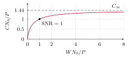
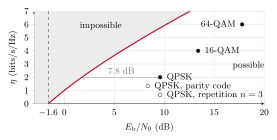

Topic 6. Continuous-channel capacity
In this topic
Topic 3 measured what a channel lets through in bits per channel use, and Topics 4 and 5 showed what a channel use is for a waveform and what it costs: a hertz of bandwidth buys two real dimensions per second. This last topic puts the two together. It gives the capacity of a waveform channel in bits per second, as a function of the power and the bandwidth, and it asks where else dimensions can be found. Sections 6.1 to 6.3 correspond to the first lecture and Sections 6.4 to 6.6 to the second.
We count the dimensions that a bandwidth offers per second and obtain the capacity of the band-limited Gaussian channel in bits per second.
We separate the regime in which bandwidth limits the transmission from the one in which power does, and find the capacity with unlimited bandwidth.
We write the limit in terms of spectral efficiency and energy per bit, the Shannon limit, and place the systems of the course against it.
We add the information of several channels used in parallel and see how the energy should be shared among them.
We describe a link with several antennas as a set of parallel spatial modes, and distinguish the number of antennas from the number of modes.
We follow one transmission through the whole chain of the course, from the bits to the decisions.
6.1 Capacity in bits per second
A transmitter sends a waveform that occupies a bandwidth W, in hertz, and reaches the receiver with average power P, in watts. The channel adds white Gaussian noise of spectral density \No/2, as in Definition 4.9 of Topic 4. Throughout this topic W is the bandwidth that the signal occupies, baseband or passband, the quantity called W_{\rm total} in Section 5.6 of Topic 5. These three numbers, P, W and \No, are all that the answer depends on.
Consider first a passband signal. By equation (5.21) of Topic 5, a passband bandwidth W carries at most R_{\rm s}=W complex symbols per second, with equality for the sinc pulse. By equation (5.15) of that topic, each symbol sees the complex Gaussian channel with noise variance \No, and by equation (5.2) the energy per symbol is \Es=P/R_{\rm s}=P/W. The signal-to-noise ratio of each channel use is therefore \begin{equation*} \snr=\frac{\Es}{\No}=\frac{P}{\No W},\tag{6.1} \end{equation*} the power of the signal divided by the power \No W of the noise in the band, as Section 4.4 of Topic 4 anticipated. By Theorem 3.14 of Topic 3, each channel use carries at most \log_2(1+\snr) bits, and there are W of them per second.
Theorem 6.1.
The capacity of the Gaussian waveform channel with power P, bandwidth W and noise spectral density \No/2 is \begin{equation*} C=W\log_2\Bigl(1+\frac{P}{\No W}\Bigr)\tag{6.2} \end{equation*} bits per second.
A baseband bandwidth W carries at most 2W real symbols per second, each with energy \Es=P/(2W) on the real Gaussian channel of noise variance \No/2. By equation (4.12) of Topic 4, the signal-to-noise ratio is 2\Es/\No=P/(\No W) again, and by equation (3.26) of Topic 3 the 2W channel uses carry 2W\cdot\tfrac12\log_2(1+\snr) bits per second, which is (6.2). In both cases the band offers 2W real dimensions per second, the transmitter spreads its power evenly among them, and each dimension carries \tfrac12\log_2(1+\snr) bits.
The channel coding theorem, Theorem 3.9 of Topic 3, now reads in seconds. For every bit rate R_{\rm b}<C there are codes and waveforms with error probability as small as we wish, and for R_{\rm b}>C there are none. Using fewer than 2W dimensions per second does not help, since Section 6.2 shows that (6.2) grows with W.
Example 6.2.
A passband channel has W=20 MHz and \No=4\cdot10^{-21} J, so the noise power in the band is \No W=8\cdot10^{-14} W. A received power P=1.2\cdot10^{-12} W gives \snr=15, that is, 11.8 dB, and \begin{equation*} C=20\cdot10^6\cdot\log_216=80\text{ Mbit/s}.\tag{6.3} \end{equation*} A wireless local area network that sends 54 Mbit/s in this band uses 2.7 bits per second per hertz. It needs \log_2(1+\snr)>2.7, that is, \snr>2^{2.7}-1=5.5, or 7.4 dB, whatever its modulation and its code.
6.2 Power and bandwidth
Equation (6.2) depends on the bandwidth twice, and the two effects pull in opposite directions. More bandwidth gives more dimensions per second, the factor W in front. With a fixed power, it also lets in more noise, so the SNR (6.1) of each dimension falls. It matters, therefore, what is held fixed when the bandwidth changes. At a fixed SNR the capacity is proportional to W, and the ratio C/W=\log_2(1+\snr) is read in Table 3.4 of Topic 3. At a fixed power the capacity still grows with W, but more and more slowly, as Figure 6.1 shows. Two regimes summarize its behavior.
When \snr\gg1 we have \log_2(1+\snr)\approx\log_2\snr and \begin{equation*} C\approx W\log_2\frac{P}{\No W}.\tag{6.4} \end{equation*} Doubling the power adds only one bit per second per hertz, that is, W bits per second, whereas doubling the bandwidth nearly doubles the capacity. This is the bandwidth-limited regime: power is abundant and the dimensions are scarce, so each of them must carry several bits, with the large constellations of Topic 5. When \snr\ll1, the approximation \ln(1+u)\approx u gives \begin{equation*} C\approx W\,\frac{P}{\No W}\log_2e=\frac{P}{\No}\log_2e,\tag{6.5} \end{equation*} which does not depend on the bandwidth at all. This is the power-limited regime: dimensions are abundant, each carries a small fraction of a bit, and the capacity is proportional to the power. The right-hand side of (6.5) is also the limit of (6.2) as W grows without bound, \begin{equation*} C_\infty=\frac{P}{\No}\log_2e=1.44\,\frac{P}{\No},\tag{6.6} \end{equation*} so even an unlimited bandwidth gives a finite capacity.

Figure 6.1. Capacity (6.2) as a function of the bandwidth at a fixed power, both in units of P/\No. At the dot the SNR is 1. To its left the SNR is larger and the capacity grows almost in proportion to the bandwidth. To its right the SNR is smaller and the capacity approaches C_\infty.
Problem 6.3.
A channel has W=1 MHz and P/\No=3\cdot10^6 s^{-1}. Find its capacity, and the capacity when the power is doubled, when the bandwidth is doubled, and when the bandwidth is unlimited.
Show solution
By (6.1), \snr=3 and C=10^6\log_24=2 Mbit/s. With twice the power, \snr=6 and, by Table 3.1 of Topic 3, \begin{equation*} C=10^6\log_27=2.81\text{ Mbit/s}.\tag{6.7} \end{equation*} With twice the bandwidth and the original power, the noise power doubles, so \snr=1.5 and \begin{equation*} C=2\cdot10^6\log_22.5=2\cdot10^6\,(\log_25-1)=2.64\text{ Mbit/s}.\tag{6.8} \end{equation*} With unlimited bandwidth, (6.6) gives C_\infty=1.44\cdot3\cdot10^6=4.33 Mbit/s. At this moderate SNR, twice the power is worth slightly more than twice the bandwidth, and even an unlimited bandwidth only slightly more than doubles the capacity. At \snr=15 the order is reversed: twice the power gives \log_231=4.95 bits per second per hertz instead of 4, and twice the bandwidth gives 2\log_28.5=6.17 in units of the original bandwidth.
6.3 Shannon limit
Section 5.6 of Topic 5 compared systems by their spectral efficiency \eta=R_{\rm b}/W and by the energy per bit that they need. The capacity (6.2) draws the boundary of that comparison. By equation (5.2) of Topic 5 the power is P=\Eb R_{\rm b}, so the SNR (6.1) of a system that sends R_{\rm b} bits per second is \begin{equation*} \snr=\frac{\Eb R_{\rm b}}{\No W}=\eta\,\frac{\Eb}{\No}.\tag{6.9} \end{equation*}
Proposition 6.4.
A system of spectral efficiency \eta can have an error probability as small as desired only if \begin{equation*} \frac{\Eb}{\No}>\frac{2^\eta-1}{\eta}.\tag{6.10} \end{equation*} The right-hand side increases with \eta, and as \eta tends to zero it tends to \ln2=0.693, that is, -1.59 dB.
By Theorem 6.1, reliable transmission requires R_{\rm b}<C. Dividing by W and using (6.9), this is \eta<\log_2(1+\eta\Eb/\No), that is, 2^\eta<1+\eta\Eb/\No, which is (6.10). For small \eta, 2^\eta=e^{\eta\ln2}\approx1+\eta\ln2, so the bound tends to \ln2. It increases with \eta because 2^\eta is convex: the slope of the chord from 0 to \eta grows with \eta.
The value \Eb/\No=\ln2 is the Shannon limit. No system, however much bandwidth it uses and however long its code, can communicate reliably with less energy per information bit than \No\ln2. It is the power-limited regime (6.6) read per bit, since P=\Eb R_{\rm b} and R_{\rm b}<C_\infty give the same inequality. Table 6.1 gives the bound for the efficiencies of this course, and Figure 6.2 draws it. Every system is a point of this plane, and the points to the left of the curve do not exist.
| \eta (bits per second per hertz) | \to0 | \tfrac12 | 1 | 2 | 3 | 4 | 6 | 8 |
|---|---|---|---|---|---|---|---|---|
| (2^\eta-1)/\eta | 0.69 | 0.83 | 1 | 1.5 | 2.33 | 3.75 | 10.5 | 31.9 |
| In decibels | -1.6 | -0.8 | 0 | 1.8 | 3.7 | 5.7 | 10.2 | 15.0 |
| A ratio of | 1.25 | 1.6 | 2 | 2.5 | 3.2 | 4 | 5 | 8 |
| In decibels | 1 | 2 | 3 | 4 | 5 | 6 | 7 | 9 |
Table 6.1. Smallest \Eb/\No at which reliable transmission is possible at spectral efficiency \eta, by (6.10), and some ratios in decibels for hand calculations.

Figure 6.2. The plane of spectral efficiency and energy per bit. The curve is the bound (6.10), which reaches the Shannon limit of -1.6 dB at zero efficiency. The filled dots are uncoded QAM with the sinc pulse at P_{\rm b}=10^{-5}, from Table 5.3 of Topic 5. The open dots are QPSK with the repetition code and with the parity code of Problem 2.9 of Topic 2, the latter at its largest gain.
Example 6.5.
By Table 5.3 of Topic 5, uncoded QPSK with the sinc pulse has \eta=2 and needs \Eb/\No=9.6 dB for P_{\rm b}=10^{-5}. By Table 6.1, the bound at \eta=2 is 1.8 dB, so QPSK is 7.8 dB from it. The distance is 13.4-5.7=7.7 dB for 16-QAM and 17.8-10.2=7.6 dB for 64-QAM. Uncoded modulation wastes almost 8 dB, a factor of six in power, at every efficiency. The repetition code of Topic 2 does not reduce this distance. By equation (2.22) of that topic it needs the same \Eb/\No as uncoded transmission, and it divides \eta by n, so its point in Figure 6.2 is straight below that of QPSK, where the curve is even farther. The parity code of Problem 2.9 moves to \eta=\tfrac43 and gains at most 1.25 dB, the other open dot of the figure. A good code moves the point to the left by several decibels and down only by the factor r.
6.4 Parallel channels
Many systems have several channels available at once. Consider K complex Gaussian channels used together, \begin{equation*} Y_k=h_k\,X_k+Z_k,\qquad k=1,\ldots,K,\tag{6.11} \end{equation*} where the gains h_k are known complex numbers and the noises Z_k are independent complex Gaussians of variance \sigma^2. For the passband channel of Section 6.1, \sigma^2=\No. The transmitter has a total energy \Es per use of the K channels, which now plays the role that the energy per symbol had for one channel, and gives E_k=\EE(|X_k|^2) to the k-th, with E_1+\cdots+E_K\leq\Es. Dividing Y_k by h_k shows that each channel is a complex Gaussian channel with signal-to-noise ratio |h_k|^2E_k/\sigma^2.
Proposition 6.6.
With independent inputs, the mutual information of the K channels (6.11) is the sum of their mutual informations. With independent Gaussian inputs of energies E_1,\ldots,E_K it is \begin{equation*} \sum_{k=1}^K\log_2\Bigl(1+\frac{|h_k|^2E_k}{\sigma^2}\Bigr)\tag{6.12} \end{equation*} bits per use of the K channels.
The noises are independent, so the channel law of the K outputs given the K inputs is the product of the K channel laws, as in the last line of Table 1.1 of Topic 1. With independent inputs the joint law of the outputs is a product too. The logarithm in Definition 3.3 of Topic 3 is then a sum of K terms, and the expectation of each is the mutual information of one channel. The second statement is Theorem 3.14 of Topic 3 applied to each channel.
The capacity of the set is the largest value of (6.12) over the ways of sharing the energy, since independent Gaussian inputs are the best ones, a fact that we use without proof. We have already met three sets of parallel channels. The n uses of a memoryless channel in time are n parallel channels with the same gain, which is why the rates of Topic 3 are counted per channel use. The real and the imaginary parts of a complex channel use are two parallel real channels. The subcarriers of Section 5.6 of Topic 5 are parallel channels in frequency, and a channel with echoes gives each of them a different gain.
When the gains are equal the energy is shared equally. For two channels, the sum (6.12) is the logarithm of the product (1+aE_1)(1+aE_2), with a=|h|^2/\sigma^2, and for a fixed sum E_1+E_2 this product is largest when E_1=E_2. This is what Theorem 6.1 did when it spread the power evenly over the 2W dimensions. When the gains differ, the better channels deserve more energy, as the following problem shows.
Problem 6.7.
Two parallel channels have |h_1|^2=1 and |h_2|^2=\tfrac14, with \sigma^2=1 and total energy \Es=4. Compare the equal split, the use of the first channel alone, and the best split.
Show solution
By (6.12) and Table 3.1 of Topic 3, the equal split E_1=E_2=2 gives \begin{equation*} \log_2(1+2)+\log_2\bigl(1+\tfrac24\bigr)=1.585+0.585=2.17\text{ bits},\tag{6.13} \end{equation*} and the first channel alone, E_1=4, gives \log_25=2.32 bits, which is more. For a general split, with E_2=4-E_1, the sum is the logarithm of the product \begin{equation*} (1+E_1)\bigl(1+\tfrac14(4-E_1)\bigr)=\tfrac14(1+E_1)(8-E_1),\tag{6.14} \end{equation*} a parabola in E_1 that vanishes at E_1=-1 and E_1=8 and is largest halfway, at E_1=3.5. The best split is E_1=3.5 and E_2=0.5, and it gives \begin{equation*} \log_2\tfrac92+\log_2\tfrac98=2\log_29-4=2.34\text{ bits}.\tag{6.15} \end{equation*} The weak channel receives little energy, but not none. With a total energy of 3 or less, the corresponding parabola has its maximum at or beyond E_1=\Es, and the best choice is to leave the weak channel unused.
6.5 Multiple antennas
Space is one more source of parallel channels. A transmitter with n_{\rm t} antennas and a receiver with n_{\rm r} antennas share the same band at the same time. In one channel use the transmitter sends a complex symbol X_j from its j-th antenna, and the i-th receive antenna observes \begin{equation*} Y_i=\sum_{j=1}^{n_{\rm t}}h_{ij}\,X_j+Z_i,\qquad i=1,\ldots,n_{\rm r},\tag{6.16} \end{equation*} where h_{ij} is the gain from transmit antenna j to receive antenna i and the noises Z_i are independent complex Gaussians of variance \sigma^2. In vector form, \Y=H\x+\boldsymbol Z, where H is the matrix of the gains. The total energy is constrained, \EE(\|\x\|^2)\leq\Es, and we write \snr=\Es/\sigma^2, the total transmitted energy over the noise of one receive antenna. We assume that both ends know H. This is a multiple-input multiple-output (MIMO) channel.
Every receive antenna hears all the transmit antennas, so the channels (6.16) are not parallel as they stand. They become parallel with the idea of Topic 4. The transmitter does not send its symbols on the antennas one by one, but along orthonormal directions \boldsymbol v_1,\ldots,\boldsymbol v_K of the space of transmitted vectors, \x=\smash{\sum_{k=1}^K}\tilde X_k\boldsymbol v_k, and the receiver projects what it receives onto orthonormal directions \boldsymbol u_1,\ldots,\boldsymbol u_K, as a correlator does with a waveform. As in Proposition 4.10 of Topic 4, the projections of the noise onto orthonormal directions are independent and have the same variance \sigma^2.
Proposition 6.8.
For every matrix H there are orthonormal directions \boldsymbol v_k and \boldsymbol u_k and numbers \lambda_k>0 such that H\boldsymbol v_k=\sqrt{\lambda_k}\,\boldsymbol u_k for k=1,\ldots,K, where K is the rank of H. With them the MIMO channel becomes the K parallel channels \begin{equation*} \tilde Y_k=\sqrt{\lambda_k}\,\tilde X_k+\tilde Z_k,\qquad k=1,\ldots,K,\tag{6.17} \end{equation*} and its capacity is that of these parallel channels, with gains |h_k|^2=\lambda_k in (6.12).
The channels (6.17) are the spatial modes of the link, and Figure 6.3 shows them. The proposition is a result of linear algebra, the singular value decomposition, and we use it without proof. The number of modes is the rank of H, which is at most the smaller of n_{\rm t} and n_{\rm r}, and the gains add up to the total gain of the matrix, \lambda_1+\cdots+\lambda_K=\smash{\sum_{i,j}}|h_{ij}|^2.
Figure 6.3. A MIMO channel seen as K parallel spatial modes. The transmitter places its symbols on orthonormal directions, and the receiver projects onto the directions in which they arrive.
Example 6.9.
One transmit antenna and two receive antennas give Y_1=h_1X+Z_1 and Y_2=h_2X+Z_2, a matrix with one column and one mode, of gain \lambda=|h_1|^2+|h_2|^2. The receiver projects onto the direction of the column, that is, it weights each antenna by the conjugate of its gain and adds. With h_1=h_2=1 it computes (Y_1+Y_2)/\sqrt2=\sqrt2\,X+\tilde Z, and the capacity is \log_2(1+2\,\snr). The second antenna doubles the SNR, a gain of 3 dB. This is the repetition code of Problem 2.5 of Topic 2 with soft decisions, repeated in space instead of time, with the same sum of observations. There is one difference. In time the transmitter pays for the second copy, so at equal energy per bit the repetition code gains nothing, as Example 6.5 recalled. In space the second copy is collected by the receiver and costs the transmitter no energy, so the 3 dB are a true gain.
Problem 6.10.
Two links with two antennas at each end have the gain matrices \begin{equation*} H_{\rm a}=\begin{pmatrix}1&1\\1&-1\end{pmatrix} \qquad\text{and}\qquad H_{\rm b}=\begin{pmatrix}1&1\\1&1\end{pmatrix}.\tag{6.18} \end{equation*} Find their modes and their capacities at \snr=1.5 and at \snr=15, and compare them with a link with one antenna at each end and gain 1.
Show solution
The columns of H_{\rm a} are orthogonal and have squared norm 2. Sending along the directions \boldsymbol v_1=(1,0) and \boldsymbol v_2=(0,1), one symbol per antenna, the receiver sees them along the orthonormal directions \boldsymbol u_1=(1,1)/\sqrt2 and \boldsymbol u_2=(1,-1)/\sqrt2, each with gain \sqrt2. There are two modes with \lambda_1=\lambda_2=2, and the energy is shared equally, \Es/2 each, so by (6.12) \begin{equation*} C_{\rm a}=2\log_2\Bigl(1+\frac{2\,\Es/2}{\sigma^2}\Bigr)=2\log_2(1+\snr).\tag{6.19} \end{equation*} The two rows of H_{\rm b} are equal, so its rank is 1. The direction \boldsymbol v=(1,1)/\sqrt2 gives H_{\rm b}\boldsymbol v=2\,(1,1)/\sqrt2, a single mode with \lambda=4, and the direction (1,-1)/\sqrt2 gives the zero vector, so nothing sent along it arrives. Hence, \begin{equation*} C_{\rm b}=\log_2(1+4\,\snr).\tag{6.20} \end{equation*} The link with one antenna has C=\log_2(1+\snr). At \snr=1.5 the three capacities are 2\log_22.5=2.64, \log_27=2.81 and 1.32 bits per channel use, and at \snr=15 they are 8, \log_261=5.93 and 4. Both matrices have the same total gain, 4. The first spreads it over two modes and the second concentrates it in one. At low SNR the concentrated gain is worth more, and at high SNR the second mode is.
6.6 One transmission chain
We end the course by summarizing a full digital data transmission system. Figure 6.4 puts in one line the blocks of the six topics, and Table 6.2 says what each block decides and where the limits are.
Figure 6.4. The transmission chain of the course.
| Block | What it decides | Relation | Topic |
|---|---|---|---|
| Encoder | information bits per coded bit | r=k/n_{\rm c} | 2, 3 |
| Mapper | bits per symbol, energy of the points | R=r\log_2M, \Eb=\Es/R | 1, 5 |
| Pulse and carrier | symbols per second, bandwidth | R_{\rm b}=R\,R_{\rm s}, \eta=R_{\rm b}/W | 4, 5 |
| Channel | power and noise | \snr=\Es/\No=P/(\No R_{\rm s}) | 4 |
| Matched filter and sampler | nothing, with a Nyquist pulse | Y_i=x_i+Z_i | 4, 5 |
| Detector or decoder | the error probability | nearest point, MAP | 1, 2 |
| Limits | what no design exceeds | R<\log_2(1+\snr), R_{\rm b}<C | 3, 6 |
Table 6.2. The blocks of Figure 6.4 for a passband transmission, with the topic that studies each.
Example 6.11.
Exercise 5.7 of Topic 5 asked for 30 Mbit/s in a passband channel of 10 MHz with pulses of roll-off \beta=0.25, and left open how little energy per bit a coded system needs. We can now give the whole answer. The efficiency is \eta=3, and by Table 6.1 no system can work below \Eb/\No=3.7 dB. The pulses of the exercise carry only R_{\rm s}=8 Msymbols per second, so each symbol must carry R=3.75 information bits, and by Theorem 3.14 of Topic 3 this requires \begin{equation*} \frac{\Es}{\No}>2^{3.75}-1=12.5,\tag{6.21} \end{equation*} that is, \Eb/\No=\Es/(R\No)>3.3, or 5.2 dB. The excess bandwidth costs 1.5 dB. With the points of 64-QAM instead of a Gaussian input, and a code of rate r=\tfrac58, the threshold found in that exercise was about 6 dB. Uncoded 16-QAM needed 13.4 dB. Of the almost 10 dB between the uncoded system and the limit, the pulse accounts for 1.5 and the constellation for less than 1. The remaining 7 dB are what a good code can recover.
We assumed throughout that the receiver knows the channel, the carrier phase and the sampling instants, and that the channel stays the same. Real channels change with time and with frequency, and the receiver must estimate them. Good codes must be built and decoded with a reasonable effort. These are the subjects of later courses, and all of them start from the six ideas of this one: decide by the likelihood, add redundancy and decide on the whole, measure information, treat waveforms as vectors, build them from pulses and carriers, and count the dimensions.
What to remember
A bandwidth W, baseband or passband, offers 2W real dimensions per second. With power P and noise density \No/2, each has \snr=P/(\No W) and the capacity is C=W\log_2(1+\snr) bits per second.
At high SNR the bandwidth limits the transmission: twice the power adds one bit per second per hertz. At low SNR the power does: C\approx1.44\,P/\No, also the capacity of an unlimited bandwidth.
A system of spectral efficiency \eta needs \Eb/\No>(2^\eta-1)/\eta. The bound is -1.59 dB as \eta\to0, the Shannon limit, and 1.8, 5.7 and 10.2 dB at \eta=2, 4 and 6. Uncoded QAM is almost 8 dB from it.
Parallel Gaussian channels with independent inputs add their rates, \smash{\sum_k}\log_2(1+|h_k|^2E_k/\sigma^2). Equal gains share the energy equally, and better channels deserve more energy.
A link with several antennas is a set of parallel spatial modes, as many as the rank of its gain matrix and at most the smaller number of antennas. At high SNR the capacity grows with the number of modes, and at low SNR with the gain of the strongest mode.
Every block of the chain fixes one quantity, and R<\log_2(1+\snr) and R_{\rm b}<C limit every design.